動機
現今社交平台豐富多樣化，而Facebook 最廣為人知
大家都有屬於自己的帳號，因此我們使用爬蟲的方式
抓取使用者間接透露的興趣及關注的事物，加以分析後
利用關聯性來讓大家媒合，呈現手牽手的概念來創造商業價值。

簡單 | 快速 | 真實
現今社交平台豐富多樣化，而Facebook 最廣為人知
大家都有屬於自己的帳號，因此我們使用爬蟲的方式
抓取使用者間接透露的興趣及關注的事物，加以分析後
利用關聯性來讓大家媒合，呈現手牽手的概念來創造商業價值。
NodeJS、Jieba、Firebase、AngularJS、Codeigniter、Semantic UI、JQuery、Graph API


1. 歡迎畫面
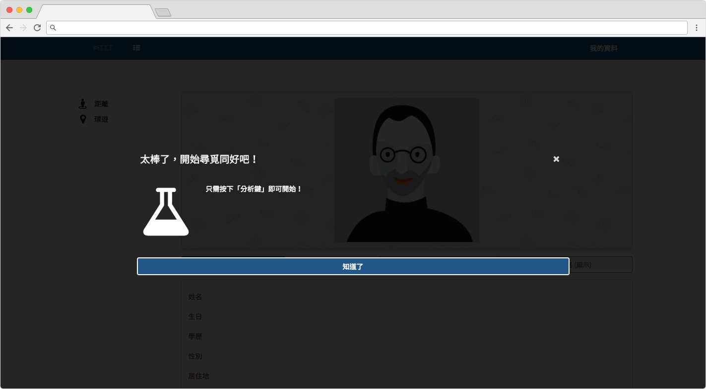
2. 只需一鍵分析即可使用
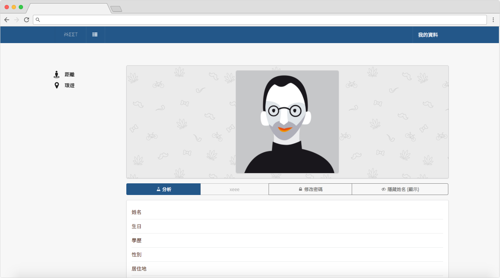
3. 快速分析出關鍵字
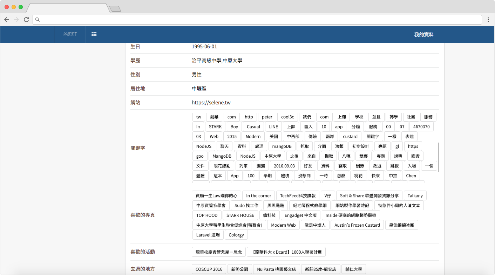
4. 「距離」顯示與我距離近的使用者
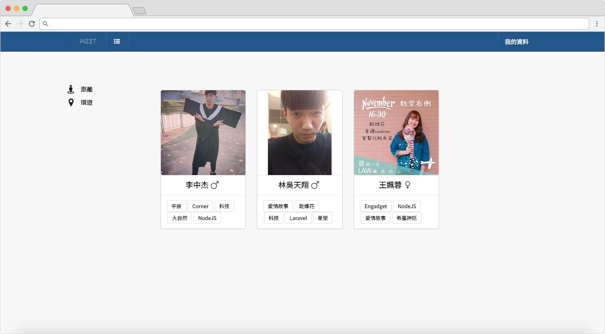
5. 主介面
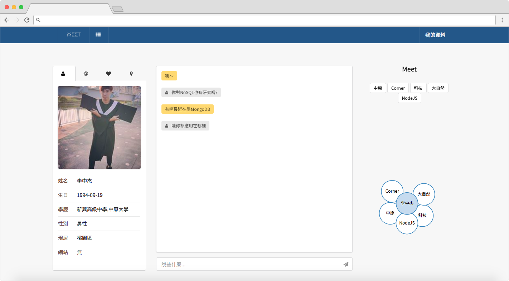
6. 追朔關鍵字來源
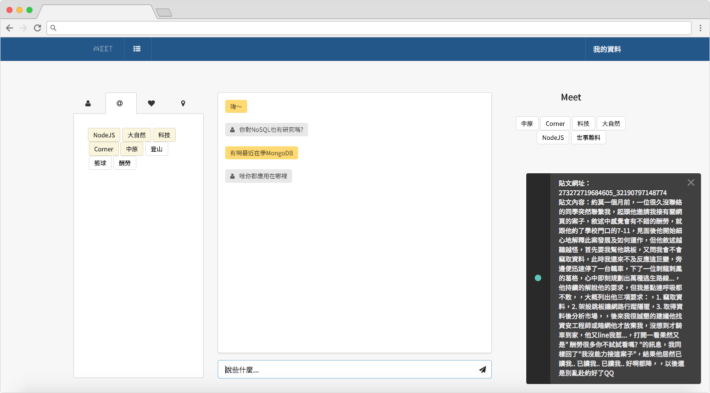
7. Google Map 顯示打卡過的地方
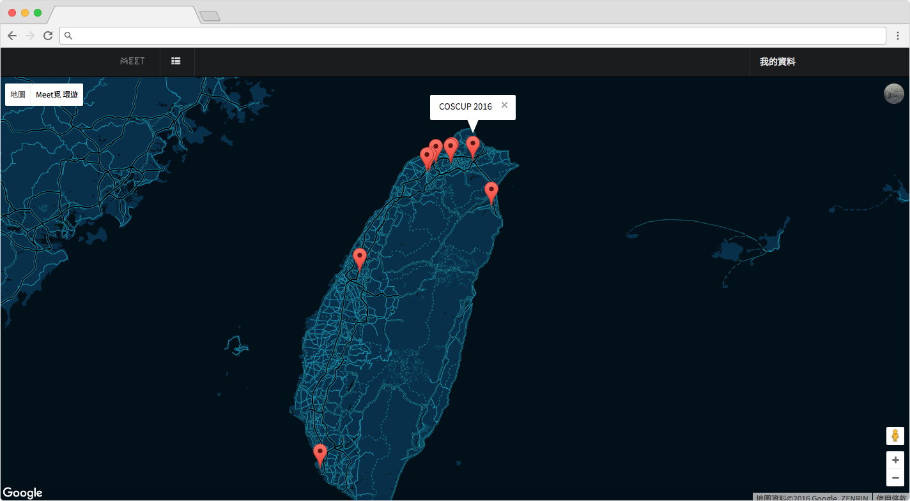
8. 對方個資、所有關鍵字、喜歡的粉專、資料視覺化 (由左至右)
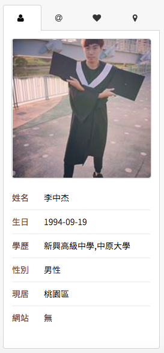
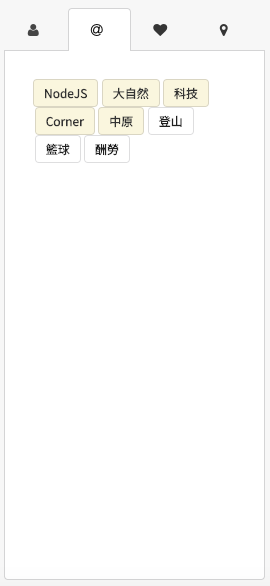
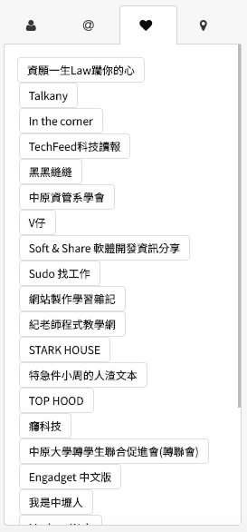
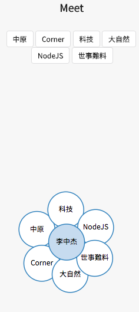
本系統改善以往社交軟體的詬病，除了能間接讓你找到志同道合的朋友外
還可透過關鍵字媒合後找到人才或職缺，引發意外的商機
當日積月累使用者數量增加後，累積的資料量隨之提升
就能將我們所要表達的「關鍵字」特色功能發揮出來
讓社交不再無依據、資料不更新，且無需手動輸入繁雜的資料
將大幅提升方便性，才能使註冊意願提升。